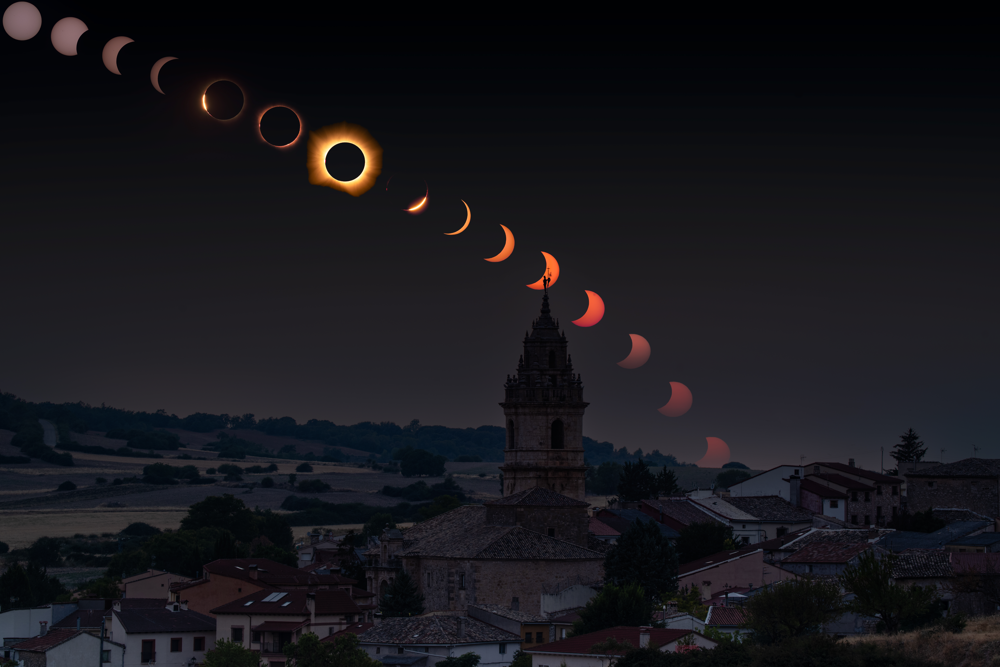
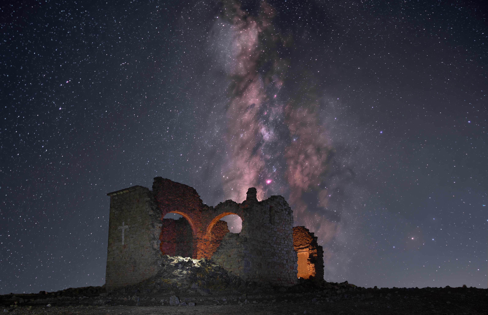
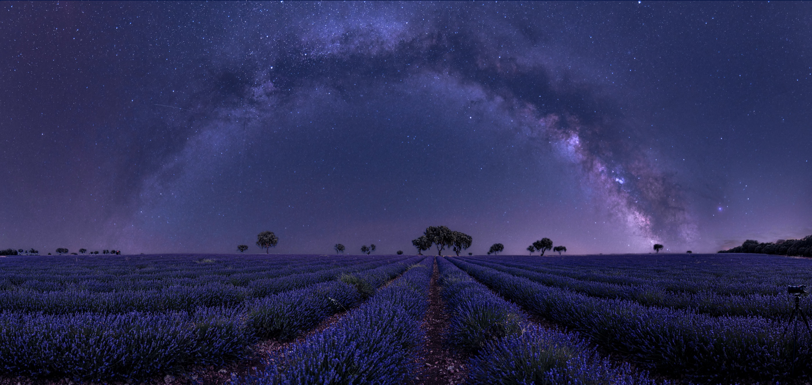

El eclipse solar sobre Escamilla
Planificación, paisaje y una secuencia construida a lo largo de varias horas.
Astrofotografía de paisaje
Fotografías del cielo nocturno en diálogo con el paisaje, los lugares históricos y las historias que los hacen únicos.


Planificación, paisaje y una secuencia construida a lo largo de varias horas.

El cielo nocturno se extiende sobre el paisaje de lavanda, uniendo la inmensidad de la galaxia con los colores y las formas de la tierra.